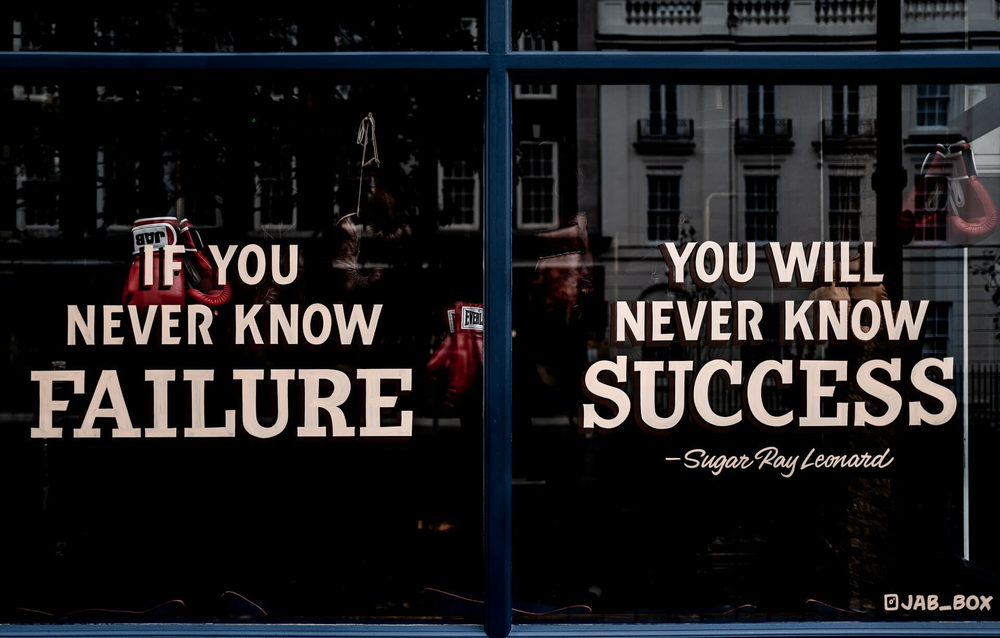

前言
终于，可以利用手头的一点闲暇，把我这至少四年来对于创业和团队管理的观察、思考与实践梳理成文，以飨读者。
四年里，我在管理、创业的岗位上，以不同于先前纯粹技术人员的角度及视野，经见了更加丰富、多样的人性。很多的人和事，纵然彼时彼刻欢声笑语、兴致盎然，却已然隐隐让我感觉到失败的征兆。身在其中时，百思不得解；如今暂且跳将出来，才得以窥其胜败得失缘由一二。
四年光阴，好似一场企业大学的本科生涯。从这些阅历中提炼出来的十个忌讳，或许便是这段时光留给我最大的裨益。
需要申明一下的是，“创业十忌”中的“创业”，并非单指狭义的创业。实际上，如果你以创业的心态面对日常的工作和学习，也是创业。
文中提及的人和事，不必对号入座，因为所举事例，未必单指某一事；所述人物，并非特指某一人。
文陋意浅，姑妄阅之。